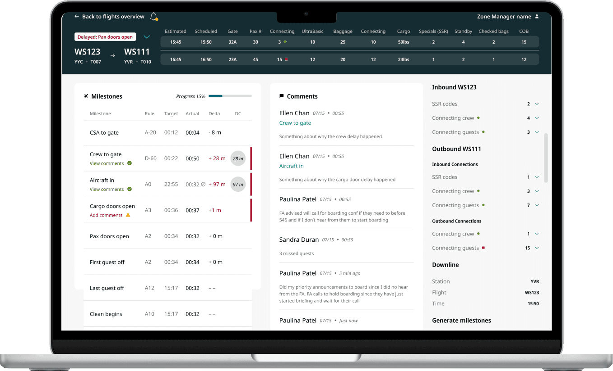
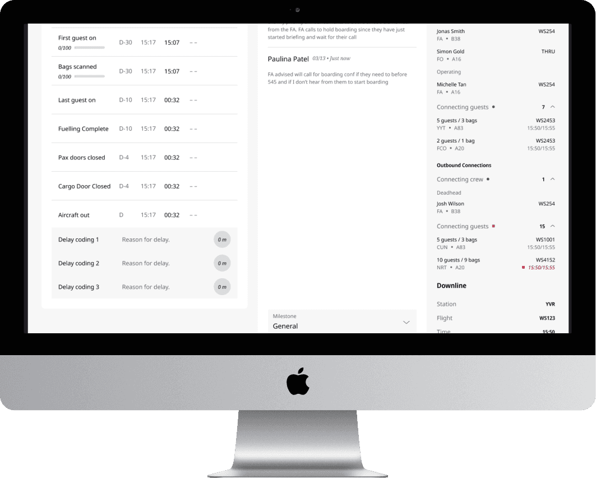
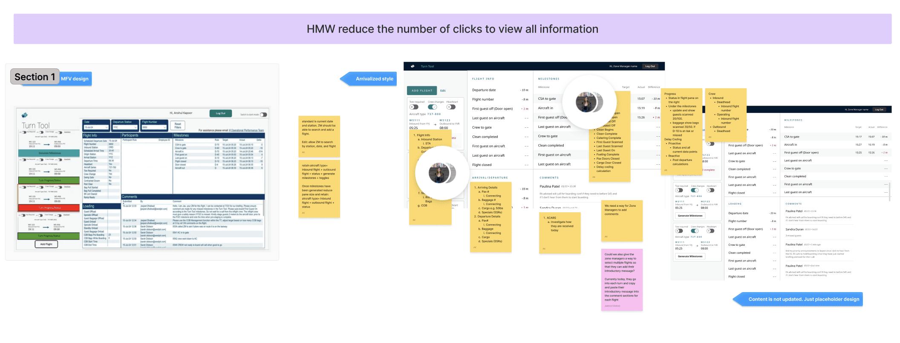
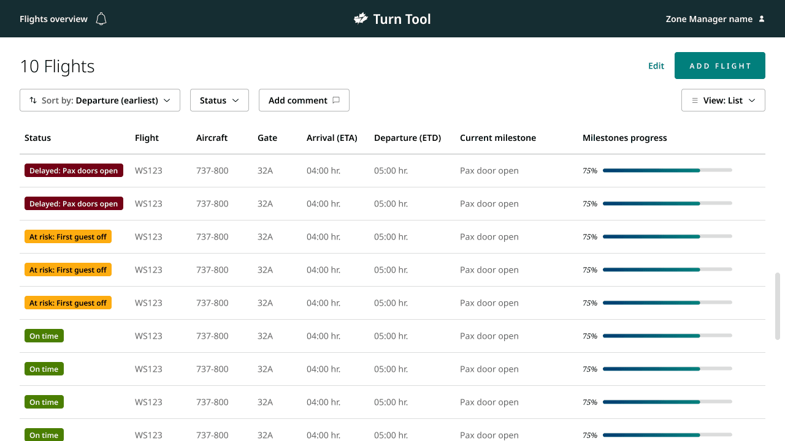
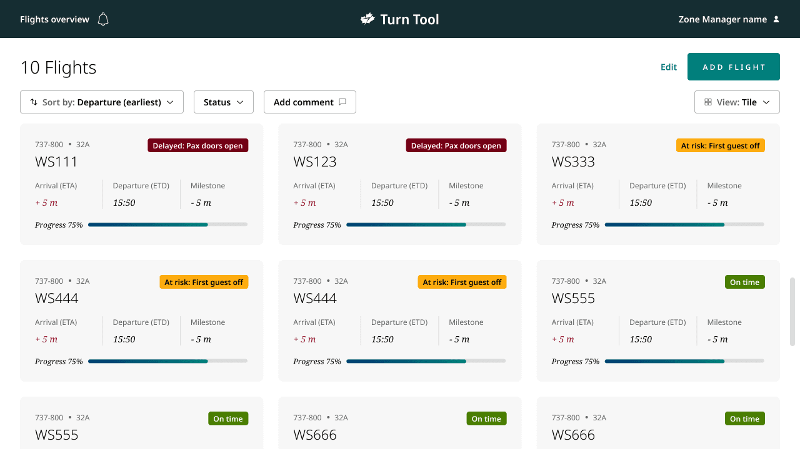
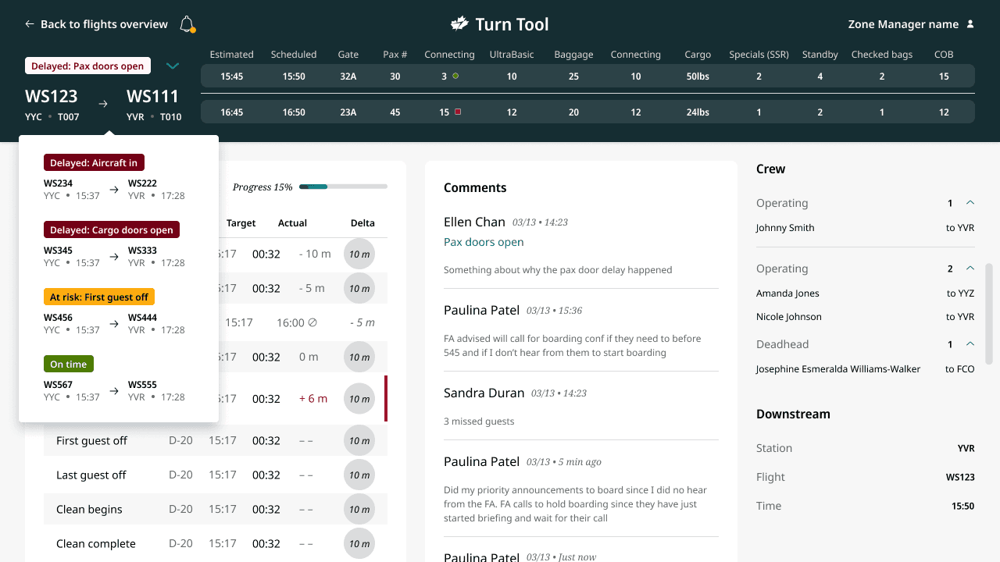
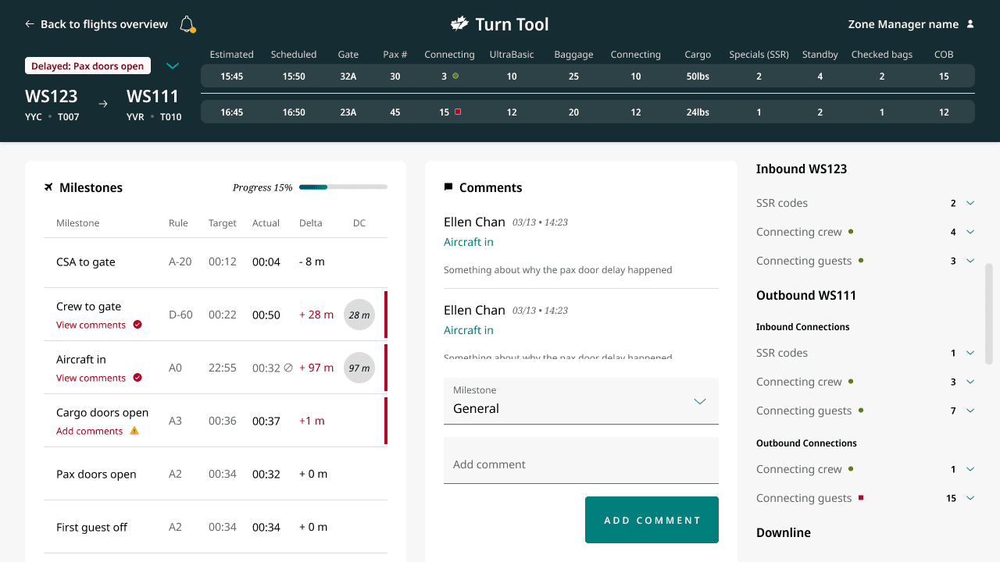
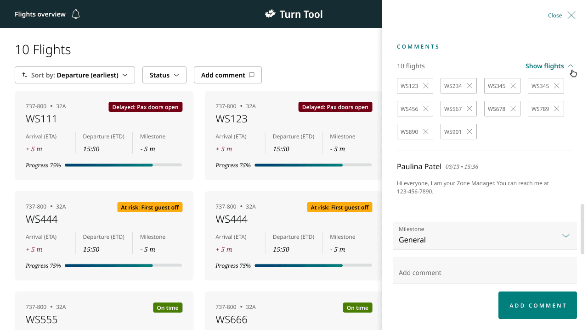
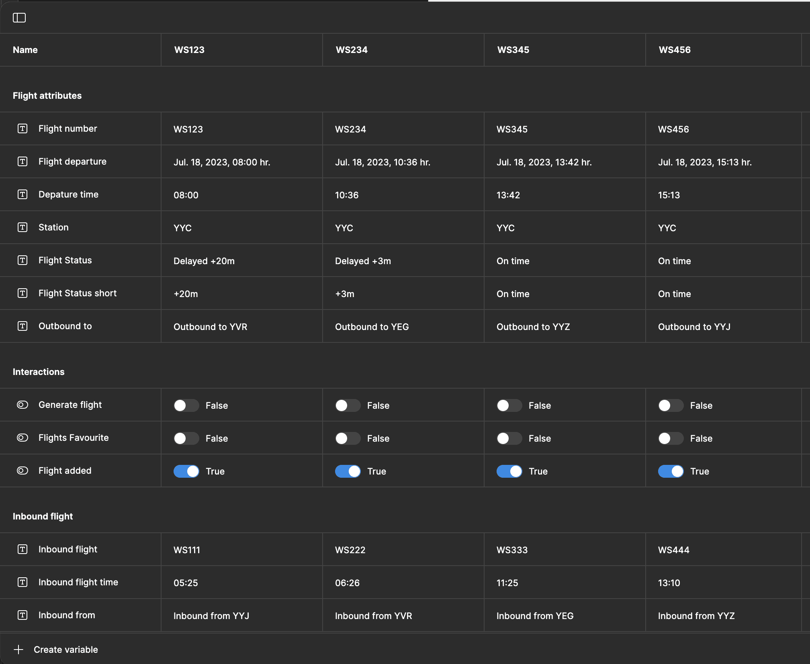

Turn Tool
Designing dashboards to monitor airplane arrivals and departures.


TLDR
Operational staff tracked flights across multiple disconnected tools and browser tabs, so delays got missed and gate agents fielded a constant stream of status calls.
Designed a single multi-flight dashboard — information hierarchy, milestone tracking, and in-context commenting — validated through interviews and prototype testing with 50+ operational staff.
Milestone-linked comments and bulk multi-flight updates replaced the copy-paste workflow zone managers relied on, and automated delay-code suggestions cut manual entry across the board.
Background
Every day, thousands of planes take off and land, connecting people and places worldwide. Behind these operations, teams manage complex schedules and logistics to keep an airport running smoothly. Despite their efforts, juggling multiple tools and scattered information sources created significant challenges, often leading to inefficiencies and delays. I was the sole designer on Turn Tool's Multi Flight View, owning the experience end to end — research, information architecture, interaction design, and prototype testing — alongside a product manager and engineering team.
The challenge
Our primary objective was to develop a single, comprehensive dashboard that operational staff could rely on when flights were at risk of delays. The current workflow consisted of a basement room where staff would yell across the room to communicate needs.
Goal #1
Centralizing all flight data
Combine all airplane flight data into one platform for operational staff to monitor airplane turns and ensure flights are on time.
Goal #2
Simplifying decision making
Provide the right data at the right time to make the decision-making process more intuitive and less stressful for operational staff.
The Discovery
Gaining workflow insights
To build an efficient product, we began by conducting in-depth interviews with Zone Managers and Operations Control Center Coordinators. Our goal was to gain a deep understanding of their pain points and daily challenges, ensuring that Turn Tool would address their real needs and streamline their workflows.
Pain point #1
Fragmented data sources
Staff had to use multiple software programs to gather different sets of data, slowing down their ability to make quick decisions.
Pain point #2
High call volume for turn updates
When delays occurred, the lack of clear information often led to a high number of calls to Gate Agents, disrupting their workflow.

The Journey
Showing the right information at the right time
The current Turn Tool only allowed one flight to be viewed at a time. To view multiple flights, staff would keep multiple tabs open and try to navigate through all of them. The new design needed to compile information together at a high level while still allowing staff to dig further into a specific problem.
User testing and realignment
We tested the design with over 50 operational staff through a semi-guided prototype. Users liked the ability to personalize their views, as well as the status indicators that gave quick insight into key milestones. However, there was concern that it took too many clicks to get to certain details.
Opportunity #1
Optimizing navigation
I streamlined navigation to minimize the back-and-forth when viewing flight details, reducing the cognitive load on users.
Opportunity #2
Keeping information always showing
I restructured the content so the most critical information was always visible and easily accessible.
New data
Through testing, we also learned of more data points that staff wanted included to improve their decision making. It turned out to be a lot more information, so I ran a workshop with Product Owners and operational staff to figure out a hierarchy.

The Product
Enhancing decision-making speed
In the next design iteration, I placed greater emphasis on intuitive navigation, automation, and content hierarchy to further streamline the experience.
Design Decision
Simplified navigation
On the flight overview page, I removed unnecessary navigation elements and enhanced the list and tile views to provide a more comprehensive snapshot of the airport's operational status — including estimated arrival and departure time, which milestone the flight was on, and a progress bar for milestone completion.
Design Decision
Focused task management
In the detailed flight view, I introduced a dropdown for navigating between critical flights, allowing staff to stay focused on their current task while remaining alert to new developments through notifications.
Key Decisions
Two calls shaped how the dashboard actually got used, not just how it looked in the prototype.
Surface every requested data point vs. build a hierarchy
Testing surfaced far more data points than planned, and the straightforward path was to add them all — staff had asked for each one.
I ran a workshop with Product Owners and operational staff to prioritize the requests into a hierarchy, rather than shipping every field that came out of testing.
Some requested data didn't make the default view — in exchange for a dashboard staff could still scan quickly under time pressure, instead of one that mirrored every individual request.
Per-flight commenting vs. bulk multi-flight updates
Keeping comments scoped to one flight at a time matched the existing data model and required no new interaction pattern.
Built bulk commenting so zone managers could post one update across every flight it applied to, directly from the overview page.
More complex comment handling to support a bulk action — in exchange for eliminating the copy-paste-per-flight workflow zone managers were relying on before.


What shipped
Feature
Integrated communication
Comments were linked directly to milestones, reducing the need for disruptive calls to Gate Agents to figure out why a flight was delayed. Delay reasons also became more accurate, since the automated system made commenting more intuitive and mandatory.
Feature
Multi-flight communication
Zone managers typically copied and pasted the same update across each flight they were managing. Now they can add a comment from the overview page and comment on multiple flights at once.
Feature
Automated delay management
A new column surfaces automatic delay code recommendations, minimizing manual input and potential errors, and letting staff respond more quickly to issues.


Impact
Turn Tool replaced a workflow built on tab-switching and phone calls with one dashboard: milestone-linked comments cut the disruptive calls to Gate Agents, bulk commenting removed the copy-paste routine zone managers relied on, and automated delay-code suggestions reduced manual entry across the board.
Takeaways
The right people
While we had some idea of what staff would need to make decisions, user testing broadened our audience and surfaced a lot of unique scenarios that needed more data than we'd planned for. Working directly with an Operations Manager gave us further insight into their daily tasks and how to really support them.
User testing with new technology
For this user test, I tried Figma variables for the first time. It was my first time building a dynamic prototype at this scale, and while it worked successfully after a lot of trial and error, it was slow and clunky. It was great for showing developers what I was thinking for the interactions, but I wouldn't use it for user testing again — it's already an unfamiliar environment for testers without adding a laggy prototype on top of it.
